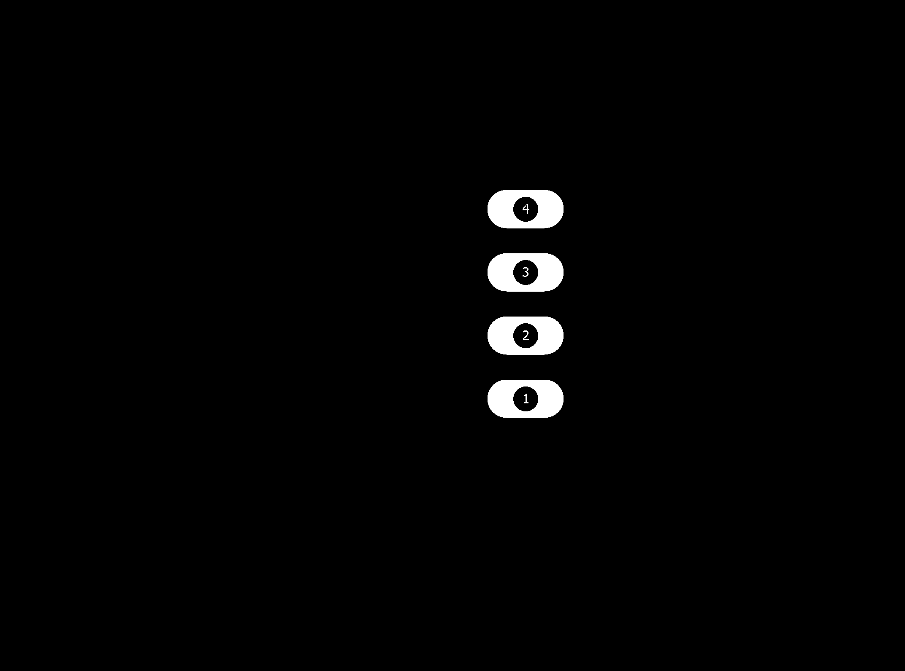
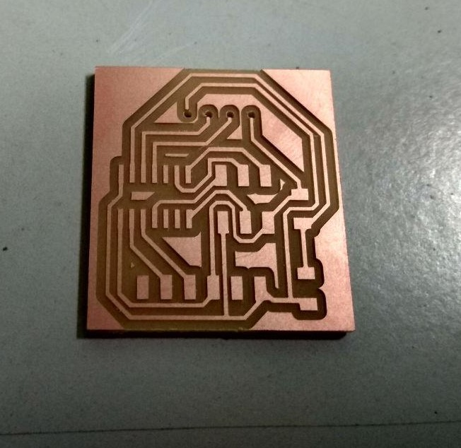
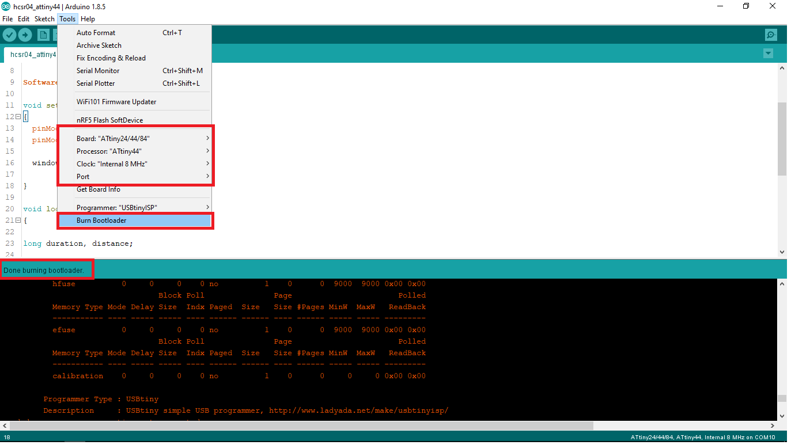

- measure something: add a sensor to a microcontroller board that you have designed and read it.
- measure the analog levels and digital signals in an input device.
Introduction
In computing, an input device is a piece of computer hardware equipment used to provide data and control signals to an information processing system such as a computer or information appliance. Examples of input devices include keyboards, mouse, scanners, digital cameras and joysticks.(Source :- https://en.wikipedia.org/wiki/Input_device
In this week we need to design a PCB with a Sensor and Vishualize the data to a computer.So in my Planet Bin (final project) PCB i need a sensor to monitor waste level in a Waste bin , so choosed Ultrasonic sensor .
In here our waste level sensing sensor is Ultrasonic sensor actually it's measure the distance using the ultra sound ,so based the distance we can measure the waste level .so here i am using a Ultrasonic sensor Module HCSR04. from my Personal Inventory for my application
Ultrasonic Sensor-(HC-SR04)
The HC-SR04 ultrasonic sensor module uses sonar sound to determine distance to an object like bats do. It offers excellent non-contact range detection with high accuracy and stable readings in an easy-to-use package. From 2cm to 400 cm or 1” to 13 feet. Its operation is not affected by sunlight or black material like sharp rangefinders are (although acoustically soft materials like cloth can be difficult to detect). It comes complete with ultrasonic transmitter and receiver module.
Pins
- VCC: +5VDC
- Trig : Trigger (INPUT)
- Echo: Echo (OUTPUT)
- GND: GND
Features
- Power Supply :+5V DC
- Quiescent Current : 2mA
- Working Current: 15mA
- Operating Frequency : 40KHZ
- Effectual Angle: 15°
- Ranging Distance : 2cm – 400 cm/1″ – 13ft
- Resolution : 0.3 cm
- Measuring Angle: 30 degree
- Trigger Input Pulse width: 10uS
- Dimension: 45mm x 20mm x 15mm
datasheet :- https://cdn.sparkfun.com/datasheets/Sensors/Proximity/HCSR04.pdf
How Does it Work?
The ultrasonic sensor uses sonar to determine the distance to an object. Here’s what happens:
- the transmitter (trig pin) sends a signal: a high-frequency sound
- when the signal finds an object, it is reflected and
- the transmitter (echo pin) receives it.
The time between the transmission and reception of the signal allows us to know the distance to an object. This is possible because we know the sound’s velocity in the air . (Source :- https://randomnerdtutorials.com/complete-guide-for-ultrasonic-sensor-hc-sr04/
PCB Design
I started Design with ATtiny44 with Autodesk EAGLE. i learned PCB design in ELECTRONICS DESIGN week-7 you can refer that to learn the design also added a 10 k Thermistor .for this circuit i did't used external clock because my application will run smoothly on internal 8 mhz clock.

Components
- ATtiny44
- HCSR04 Ultrasonic Sensor
- Thermistor 10k
- Resistor 10k
- ISP Header pin 2x1
- FTDI Header pin 6x1
First I changed Design rules in Eagle.
PCB Designing Rules
Before routing the board, the most important step you have to do is set the Design rules. The design rules relate to the trace width, the clearance between the traces etc. you can open Design rules from the toolbar => Edit => Designing rules
Open the designing rules.

First we need to set the Clearnce , in default it' comes with the 6 mil in here fab we are using 1/64 bit for milling so here the trace will come around 16 mill.

Next we need to take care the Distance ,it default value is 40 mil so in here i set the value to corresponding to our bit that is 16 mil.


Next we need to set the Size of the Copper Trace , in dafult 6mil, and we need to make it 16 mil.

I used Autoroute Function in egale.
I Selected the one of the best auto routed solution .
but i found two error .so i just solve that by Deleting the auto routed path and manually routed my self.

Here is the Final route.
I exported Mill , drill and Cut images and Monochrome.
In here Ultrasonic module is a Through-hole componet so we need to drill a holes.
In our Model it will remove the copper forom the copper so I used GIMP to invert my image to make it compatable with drill.
this is how it's look for drill.
PCB Milling
I explaind about the PCB milling procedure in the Week5 :- Electronics Production . same as here , am using Modela MDX for milling the PCB.
I used the Fab Modules with Modela to mill PCB.for milling i used 1/64 bit.Fab Module is very easy and simple UI compared to new Fab Mods , so choosed the Module.

I used single sided FR-grade PCB .

Milling Started
Next i need to cut out the Trace , for cutting the trace i used 1/32 bit.

Cuting and Drilling is a fast process compared to milling
Soldering
Components
- ATtiny44
- HCSR04 Ultrasonic Sensor
- Thermistor 10k
- Resistor 10k
- ISP Header pin 2x1
- FTDI Header pin 6x1
First i soldered ATtiny44 Microcontoller.
Then soldered one by one.
HERO SHOT
Programming
I used Arduino IDE and Arduino Bootloader to develope the Firmware .first i burned Arduino Bootloader by using FabISP
First I tried to measure Distance .
/*
* Author :- Salman Faris
* Date :- 11/04/2018
*
* Measure distance in CM using ultraSonic distance sensor with ATtiny44
* Source :- http://archive.fabacademy.org/2018/labs/fablabkochi/students/salman-faris/week11.html
*/
#include <SoftwareSerial.h>
#define trigPin PA2 //Ultarsonic Trig Pin Connected to PA2
#define echoPin PA1 //Ultarsonic Echo Pin Connected to PA1
#define RX 9 //TX pin of ATtiny44
#define TX 10 //RX pin of ATtiny44
SoftwareSerial window(RX, TX); //initialize 'window' as Software Serial
void setup()
{
pinMode(trigPin, OUTPUT); //set trig pin as OUTPUT
pinMode(echoPin, INPUT); //set echo pin as INPUT
window.begin(9600); //initialize software Serial in 9600 bit's per second
}
void loop()
{
long duration, distance;
digitalWrite(trigPin, LOW);
delayMicroseconds(2);
digitalWrite(trigPin, HIGH);
delayMicroseconds(10);
digitalWrite(trigPin, LOW);
duration = pulseIn(echoPin, HIGH);
distance = (duration/2) / 29.1;
window.print("Distance :");
window.print(distance);
window.println(" CM");
delay(100);
}
Click Upload to flash the code in to board.
OUTPUT
ATtiny45
After that i used ATtiny45 and also removed the Thermistor so the size is reduced about 50% .
Schematic diagram

Board
Final Result
Hero Shot
Programming
/*
* Author :- Salman Faris
* Date :- 11/04/2018
*
* Measure distance in CM using ultraSonic distance sensor with ATtiny45
* Source :- http://archive.fabacademy.org/2018/labs/fablabkochi/students/salman-faris/week11.html
* used 11 Cm glass for waste bin model
*/
#include <SoftwareSerial.h>
#define trigPin 3 //Ultarsonic Trig Pin Connected to PA3
#define echoPin 4 //Ultarsonic Echo Pin Connected to PA4
#define RX 1 //TX pin of ATtiny44
#define TX 0 //RX pin of ATtiny45
SoftwareSerial window(RX, TX);
void setup() {
pinMode(trigPin, OUTPUT);
pinMode(echoPin, INPUT);
window.begin(9600);
}
void loop() {
long duration, distance;
digitalWrite(trigPin, LOW);
delayMicroseconds(2);
digitalWrite(trigPin, HIGH);
delayMicroseconds(10);
digitalWrite(trigPin, LOW);
duration = pulseIn(echoPin, HIGH);
distance = (duration/2) / 29.1;
int wastelevel = 11 - distance ;
window.print("Waste Level :- ");
window.print(wastelevel);
window.println( "%");
delay(1000);
}
Model
Demo Video
Joystick
Joystick Module can measure position co-ordinates on X and Y axis by moving the thumbstick on top. It also contains a tactile switch that can be triggered by pressing the thumbstick down
This module produces an output of around 2.5V from X and Y when it is in resting position. Moving the joystick will cause the output to vary from 0v to 5V depending on its direction, we can expect to read a value of around 512 in its resting position (expect small variations due to tiny imprecisions of the springs and mechanism) When you move the joystick you should see the values change from 0 to 1023 depending on its position.
Pinout
In here Ground is Connected to Ground and 5V pin connected to Board 5V supply.VRx and VRy is connected to a analogPin , and SW is the switch pin so it can be connect a digital pin.
Here is i usedMISO pin for VRX, MOSI pin for VRY and SCK pin SW.
Code
#include <SoftwareSerial.h>
int xValue = 0;
int yValue = 0;
int bValue = 0;
#define Rx 3
#define Tx 2
SoftwareSerial myserial(Rx, Tx);
void setup()
{
myserial.begin(9600);
pinMode(6, INPUT_PULLUP);
}
void loop()
{
xValue = analogRead(4);
yValue = analogRead(5);
bValue = digitalRead(6);
myserial.print(xValue, DEC);
myserial.print(",");
myserial.print(yValue, DEC);
myserial.print(",");
myserial.print(!bValue, DEC);
myserial.print("\n");
delay(2);
}
demonstration video
Group Assignment
In the group Assignmnet we need measure the analog levels and digital signals in an input device and display in to the DSO.but in our lab we have UniSource DS-1100 Digital Storage Oscilloscope but it doesn't have an ASCII text / binary decode function (datasheet :- http://www.testequipmentdepot.com/unisource/pdf/ds-1065_1100_1200_datasheet.pdf)